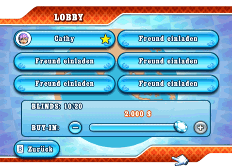

22 |
Chat & Einladungen |
 |
Während eines Online-Spiels kannst du aus einer Liste mit bestehenden Chat-Nachrichten wählen, um zu bluffen, deine Gegner aus dem Konzept zu bringen oder ihnen zu gratulieren. Das Chat-Menü erreichst du im Spiel, indem du das Chat-Symbol rechts unten auf dem Bildschirm wählst. Wenn du keine Chat-Nachrichten erhalten willst, kannst du sie im Zwischenmenü unter "Optionen" deaktivieren. Wenn du das Chat-Symbol wählst, findest du außerdem das Menü "Freund einladen", eine Kurzfassung deiner Freundesliste. Du kannst Freunde zu allen Spielen einladen, außer es handelt sich um ein Spiel nur für Freunde, für das ein anderer Spieler Gastgeber ist. Einladungen für Spiele mit Freunden sehen wie Chat-Nachrichten aus und haben ein Feld zur Bestätigung. Spiele-Lobby  Bevor ein Mehrspielerspiel beginnt, finden sich alle Spieler in der Lobby ein. In weltweiten Spielen kann jeder seine Freunde einladen, solange es noch freie Plätze am Tisch gibt. Dazu wählst du einen freien Platz und öffnest dadurch die Kurzfassung deiner Freundesliste. Für Cash Games wird der Buy-In in der Lobby bezahlt. Wenn du fertig bist, wählst du das Feld "Fertig" und teilst dem Gastgeber und den anderen Spielern deinen Status mit. Vergiss nicht, dass der Gastgeber ungeachtet deines Status das Spiel jederzeit starten kann. In diesem Fall wird der höchste Betrag, den du dir leisten kannst, automatisch als dein Buy-In gewählt. Der Platz des Gastgebers ist immer durch einen gelben Stern markiert. Nur der Gastgeber kann in weltweiten Spielen Plätze reservieren und in Spielen mit Freunden Freunde einladen. Turniere können erst dann gestartet werden, wenn alle Spieler da sind. |
 |
 |
 |